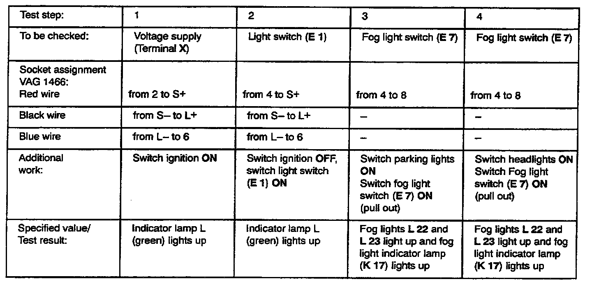

Fog/Driving Lamp: Testing and Inspection
Use tester VAG 1466 when troubleshooting!
Test conditions:
Fuse No.10 OK!
Fog lights L22 and L23 OK!
Troubleshooting preparations:
- Remove push-in jumper from relay position 10.*
- Insert test adaptor VAG 1466/3 into relay position 10. Connect VAG 1466 to test adaptor.
* Fog light relay (J 5), stamped with the production control number 53, may be installed in relay position 10 instead of the jumper. During repairs relay can be replaced with jumper.
Test procedure information:
- Perform test steps according to table.
- If specified value/test result is obtained, continue troubleshooting with next test step (test result OK).
- If specified value/test result is not obtained, locate and eliminate malfunction using table.
- Use valid Wiring Diagram for checking wiring.
- Remove all test wires from sockets of VAG 1466 after each test step.
After repairing malfunction, check fog lights for proper operation.

Possible causes it specified value/test result is not obtained: